终末之地 2
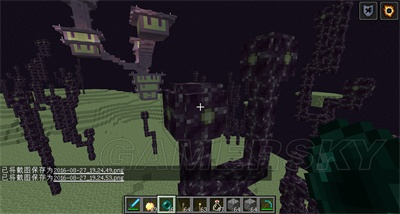
这是末影花，打掉后可以得到末影花（废话），末影花可以种植在末地石上，然后会慢慢长成末地植物
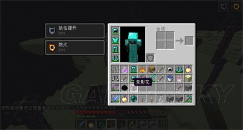
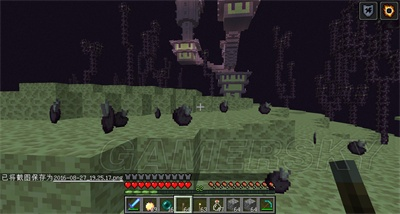
如果你直接破坏它的根部，则会掉落一地的末影果
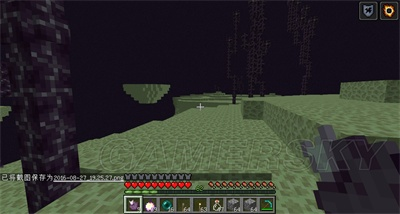
吃末影果会在附近随机瞬移，但是有冷却（末影珍珠也是）
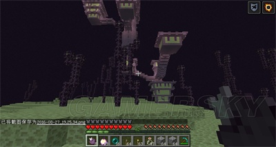
这个就是末地城，运气好进了折跃门就能看见，运气不好跑5000米可能也看不到
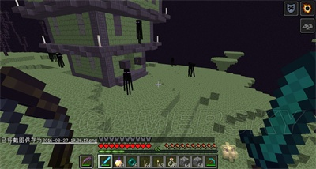
你认为你就可以这么大摇大摆的走进去？错！这么进去就是找死，门口就有守卫-潜影贝，它们会发出漂浮弹，可以跟踪玩家，击中玩家后就会不由自主的飘起来10秒，而且这货隐藏的就像个方块一样。如果你攻击它的子弹就会爆炸。漂浮效果消失后立刻就会落地，如果没有摔落保护缺漂浮了很高，那么下场就是摔死。潜影贝有开壳和关壳（怎么听着这么别扭）两个形态，关壳时拥有跟钻石套差不错的防御能力（护甲20）并且免疫远程攻击。开壳时没有防御能力并且可以受到远程攻击。受到伤害时可能会立刻传送。
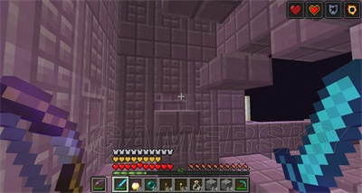
一个小跑酷，但是上面各种潜影贝…..不过漂浮效果用好了也可以直接升到顶层..没用好就摔死或摔残
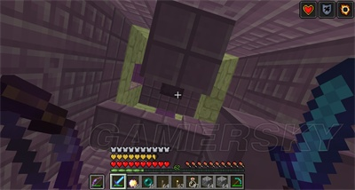
放眼一看，上面一群潜影贝
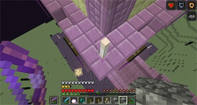
末地烛，跟火把差不多，不过跟火把有一些区别。

等会就来更新，撸主去找末地城了
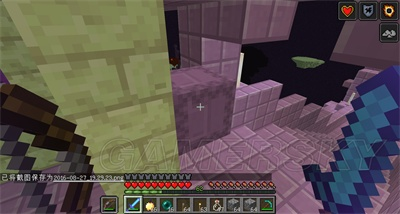
一定要小心，末地城里到处都是潜影贝，不过漂浮时在房间里还是很有优势的，毕竟脑袋顶着天花板，就跟没漂浮差不多了，而且
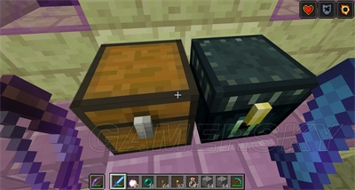
宝箱房
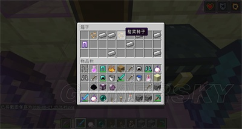
末地城的宝箱奖励真的是太丰厚了…例如这里有一件保护IV的铁护腿
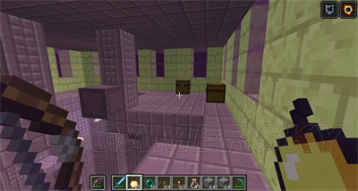
末地城里到处都是箱子，建议每个顶层都搜刮，看看有没有箱子，不要恋战，省的减血过多
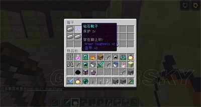
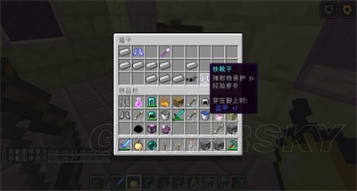
极品附魔…….去一趟末地城真的是发大财
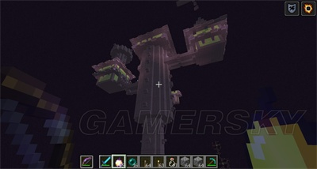
一个岛上居然两个末地城
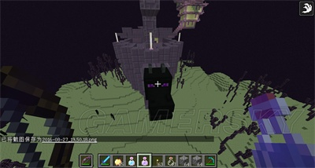
找了20分钟的末地船，就为了做教程。末地船船头会有一个龙首，可以戴在头上。
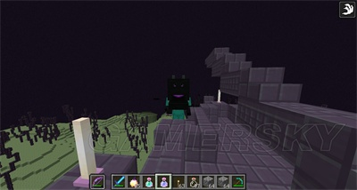
走动时龙嘴会一张一合
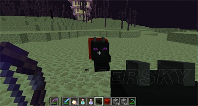
接收到红石信号也会不断的一张一合
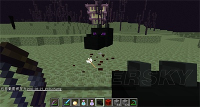
停止接收红石信号后会停留在停止接收前的样子，例如↑
其实只要接收红石信号就会不断一张一合
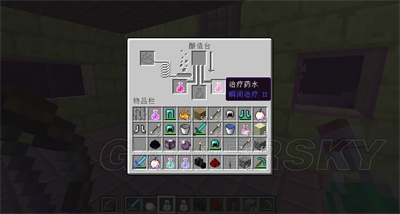
内部的酿造台，必定有2瓶瞬间治疗II
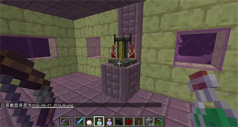
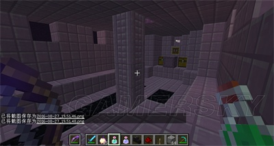
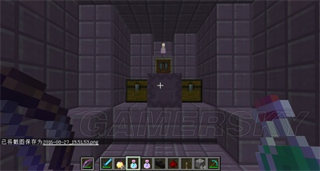
两个宝箱+1个滑翔翼，有一个潜影贝守护
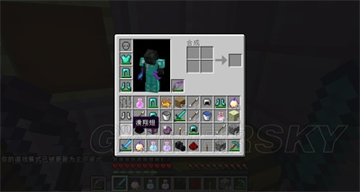
左击物品展示框，滑翔翼就变成了掉落物
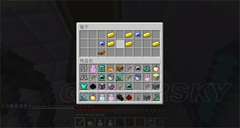
所以建议大家一定要至少探索完一个末地城再回主世界
建议直着走（撘路），省的迷路。如果迷路了就只能死了回主世界了
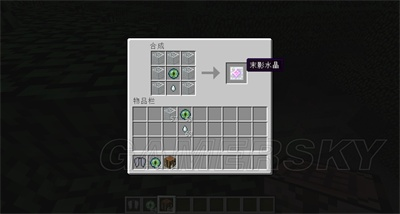
为了复活末影龙，我们需要4个末影水晶
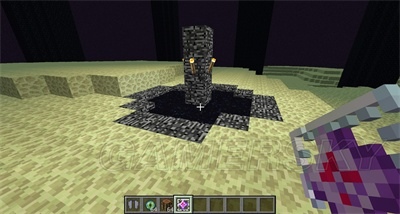
分别放置在4个边上
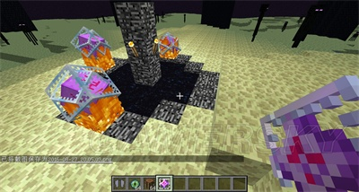
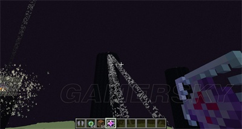
之后所有黑曜石塔恢复原状，所有末影水晶重新生成，之后末影龙重生。
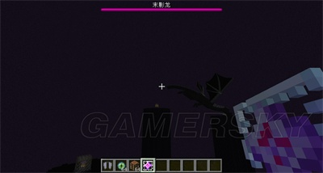
当然末地传送门也会关闭
秘密武器：床
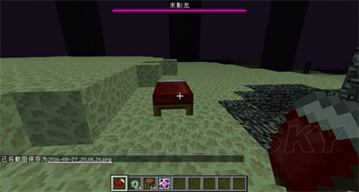
在末地和地狱是不能睡觉的，右击床会发生大爆炸
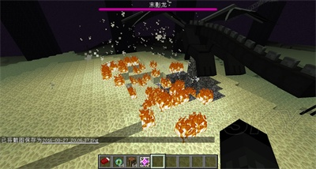
尤其是末影龙在传送门上方盘旋的时候，正是用床的好时机，伤害巨大！但是也要小心别把自己炸死了
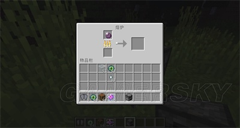
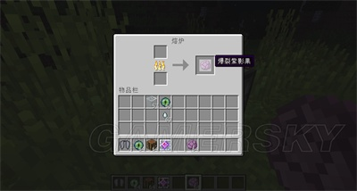
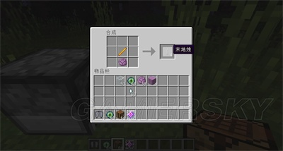
紫影果可以烧制成爆裂紫影果，爆裂紫影果可以用来合成末地装饰品和末地方块。在建筑工艺章节会详细讲
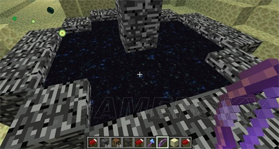
当你跳进末地传送门时
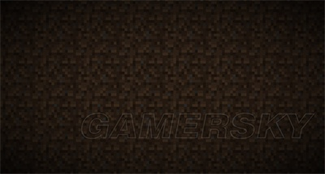
会出现一大段的终末之诗，可以按ESC跳过，之后你就回到了你的重生点